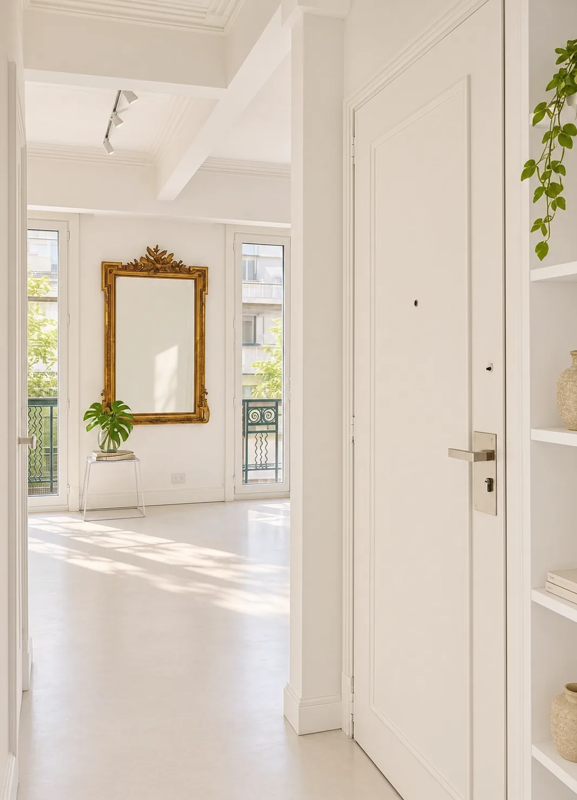
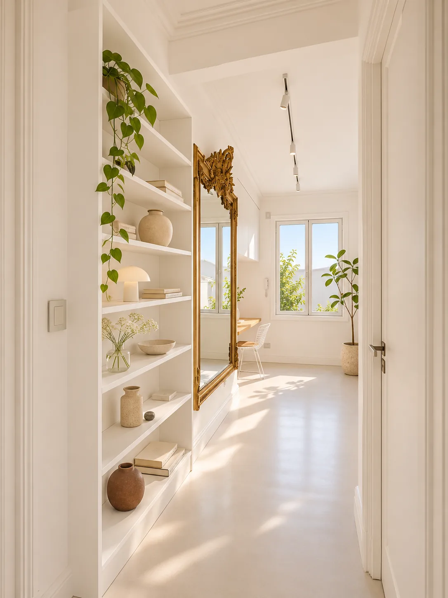
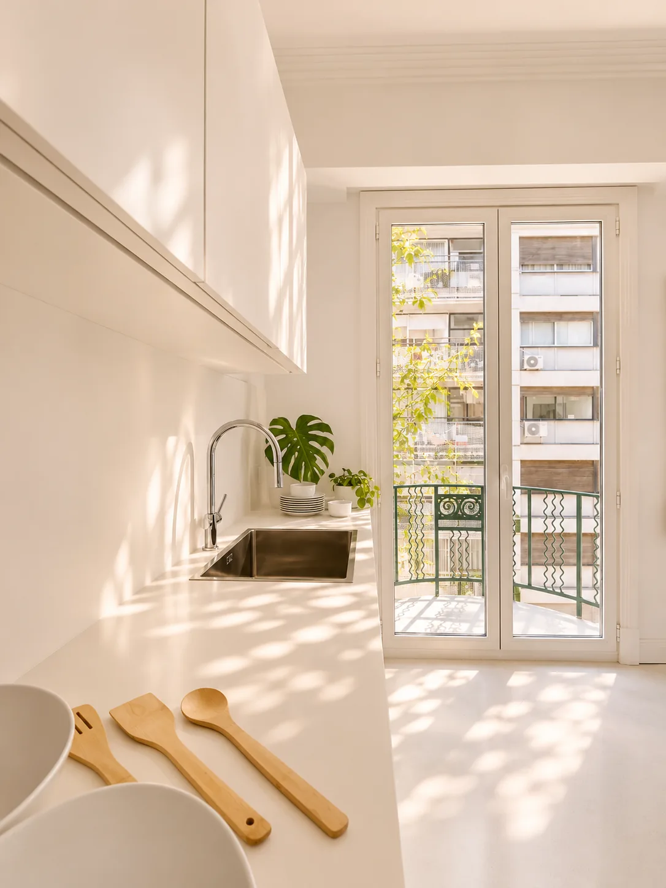
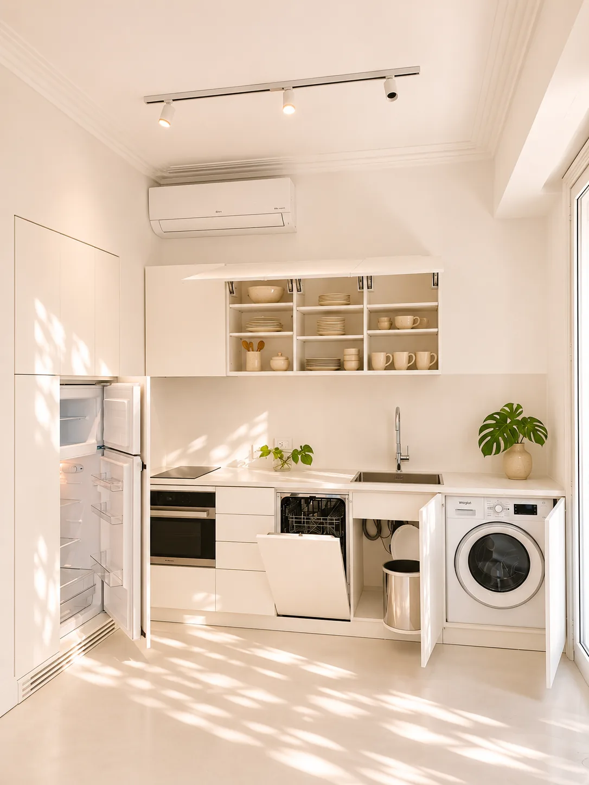
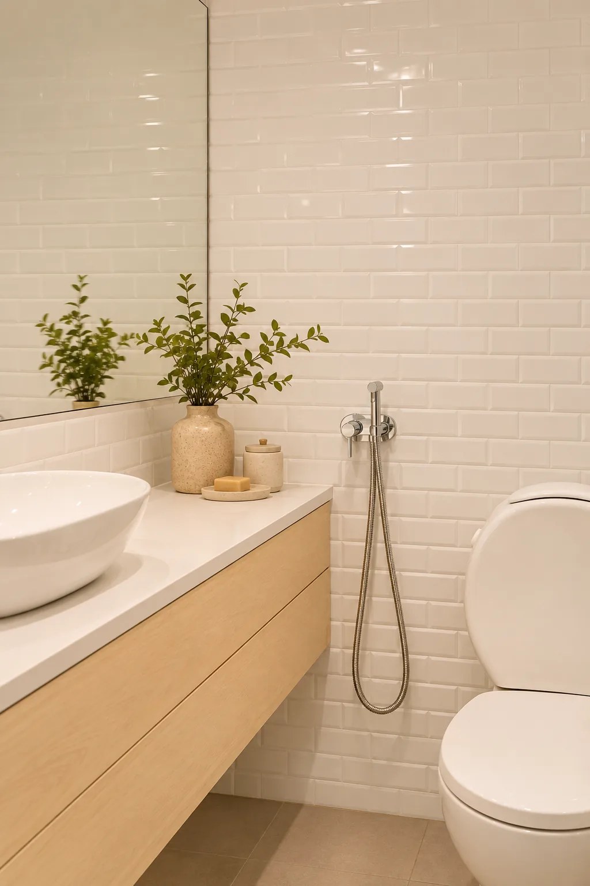
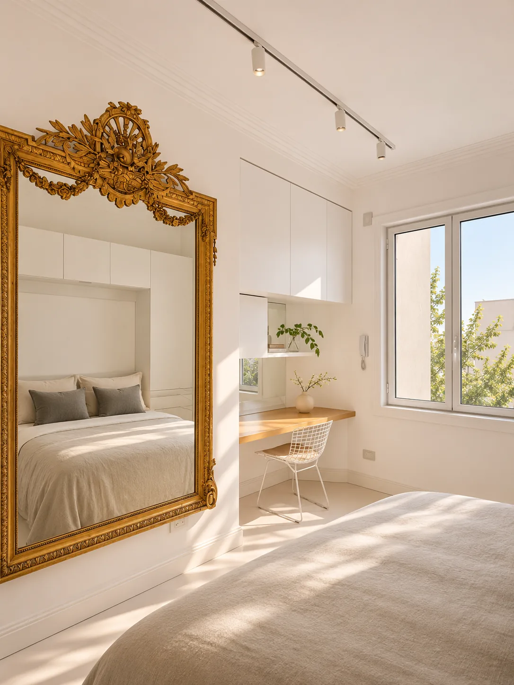
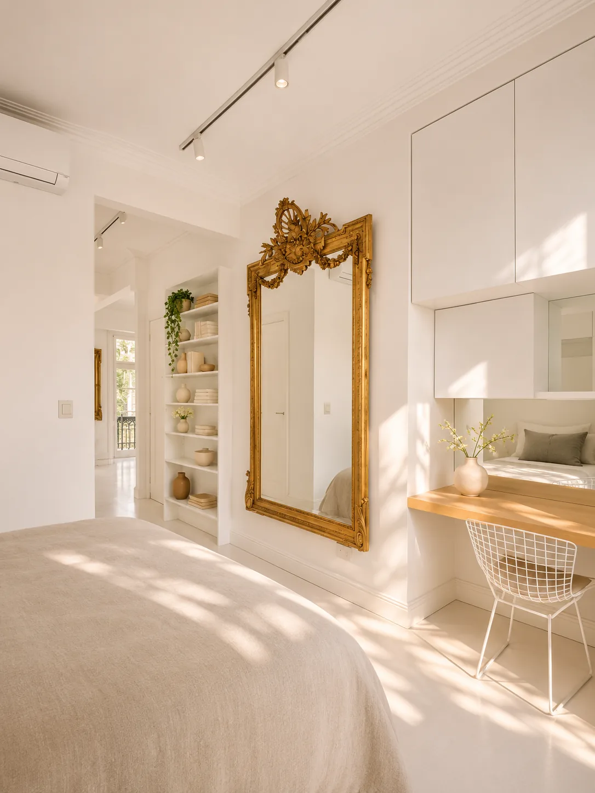
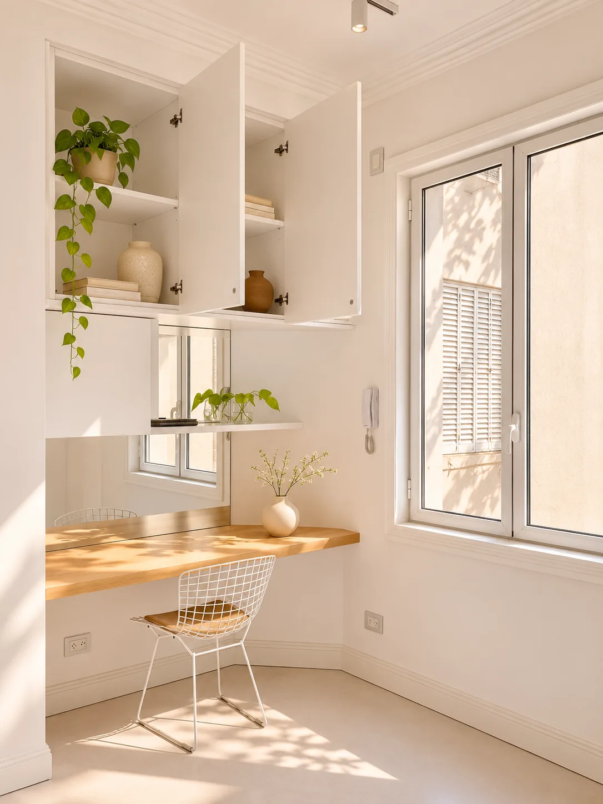

Un departamento blanco, hecho de luz
En esta remodelación, el estudio transformó integralmente el departamento para crear espacios más luminosos, funcionales y adaptados a las necesidades de la vida cotidiana.


Más luz, más amplitud
A partir de una paleta predominantemente blanca, el estudio buscó potenciar la luz natural y generar una sensación de mayor amplitud y continuidad entre los distintos ambientes.

Renovada por completo
La cocina fue completamente renovada, con mobiliario diseñado a medida, amplias superficies de trabajo y soluciones de guardado que permiten mantener el espacio organizado y funcional.
Una cocina que desaparece
Heladera, horno, lavavajillas y lavarropas quedan integrados por completo en el mobiliario diseñado a medida, junto a alacenas de puertas rebatibles para la vajilla de todos los días. Con las puertas cerradas, la cocina se lee como un único plano blanco y el ambiente gana calma y amplitud.

Heladera, lavavajillas y lavarropas, ocultos detrás de un mismo frente blanco

Claro y sereno
El baño también fue reformado en su totalidad, combinando materiales claros, líneas simples y una iluminación cuidadosamente planificada para lograr un ambiente cómodo, moderno y visualmente sereno.


Trabajar sin interrumpir el descanso
En el dormitorio, el estudio incorporó un sector de escritorio integrado, pensado para trabajar o estudiar sin interferir con el área de descanso.
Cada rincón
El mobiliario a medida permite aprovechar cada rincón y sumar capacidad de guardado, manteniendo una estética limpia y armoniosa.

Luz y materia
Esta obra es una remodelación integral de departamento: el estudio renueva cocina y baño, diseña el mobiliario a medida, integra los electrodomésticos y define materiales e iluminación para la vida cotidiana.
Conocer los servicios
Otros proyectos
Ver todos los proyectos


Todo empieza con una conversación
El estudio diseña viviendas completas en Argentina, España y Estados Unidos.